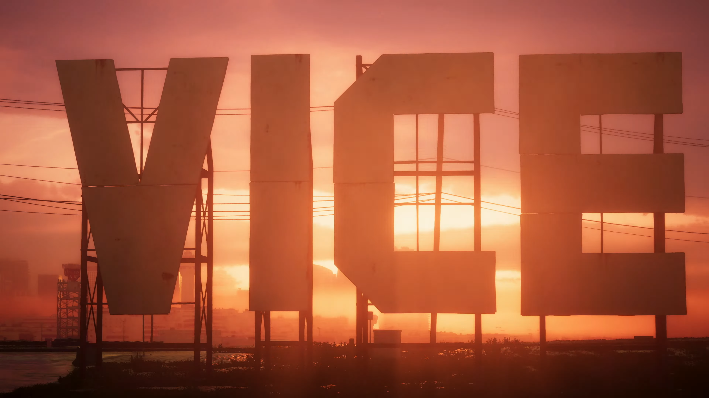
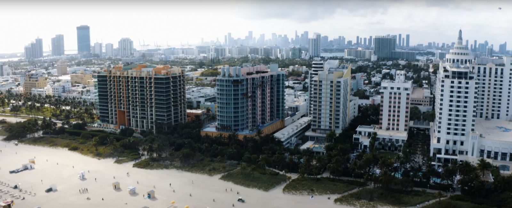

Noticias
Todas las noticias
¡Los detectives de GTA 6 lo vuelven a hacer!
Mapa filtrado revela un mundo inmenso
Un grupo de detectives online ha descifrado las pistas y filtraciones para armar un mapa preliminar del esperado GTA 6. Agárrense fuerte, porque este mapa es gigante: parece que Rockstar Games no se está conteniendo con Vice City, ¡sino que nos trae un estado entero inspirado en Florida! Para ponerlo en perspectiva, el mapa filtrado es tres veces más grande que el de GTA 5. Sin embargo, no se emocionen demasiado. El insider Jason Schreier ha advertido que, si bien el mapa será más grande que su predecesor, no llegará a las dimensiones épicas que algunos jugadores esperan.
¿Qué más sabemos?
Rumores sugieren que la voz de Jason en el tráiler podría pertenecer al actor Gregory Connors. ¿Te mueres de ganas de explorar este nuevo mundo criminal? Sigue los pasos de estos detectives de GTA y mantente alerta para más filtraciones y pistas.
¡Un tráiler épico hecho realidad!
¡El mismísimo GTA 6!
Olvídense de esas parodias chafas que ya vieron por ahí, porque esto sí que vale la pena. Un tal Andrew Levitt, un youtuber con más pasión que un fanático de las hamburguesas en un buffet libre, se ha rifado recreando el tráiler oficial de Rockstar.
¿Cómo lo hizo este loco?
Pues agarró su cámara y se recorrió la ciudad entera, grabando los lugares más icónicos como si fuera un agente secreto. ¡Hasta se puso en el pellejo de Jason (el prota) y su amiga Lucía para que todo fuera más real! Y para las escenas más cañeras, ¡alquiló un barco y un carrazo! Sí, ya sabemos que el tráiler original de Rockstar tiene un presupuesto que te deja tiritando, pero la pasión y la creatividad de este tío son dignas de aplaudir.
¿Quieres ver la comparación?
Aquí te dejamos el trailer original para que alucines con la magia con tus propios ojos. Más tarde, Andrew Levitt también subió un video "detrás de cámaras" de 12 minutos donde te cuenta todos los secretos de cómo hizo su obra maestra. GTA 6 todavía no tiene fecha oficial de salida (dicen que para el 2025), pero esta recreación ya nos ha dado una buena dosis de hype para que sigamos babeando hasta que llegue el día. ¡Bravo, Andrew! ¿Te ha molado este artículo? No te pierdas las últimas noticias y filtraciones sobre GTA 6 en nuestra web. ¡Únete a la comunidad y prepárate para vivir la experiencia Vice City a tope!